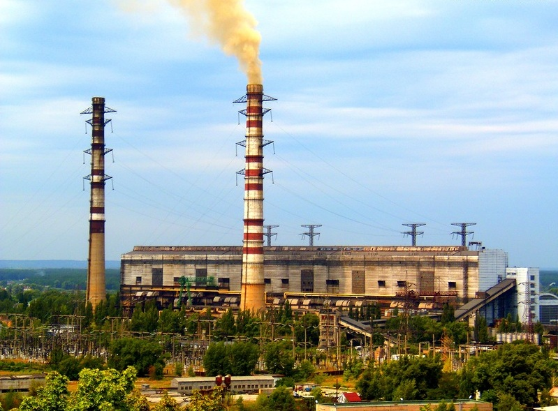
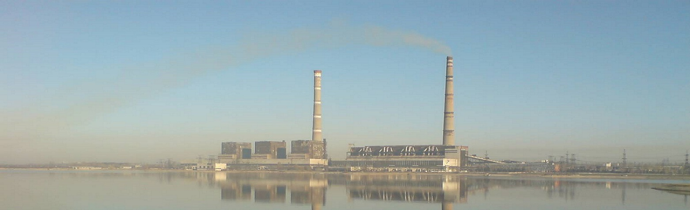

Вуглегірська ТЕС
Донецька область
Найпотужніша електростанція Товариства
і перший за величиною енергогенеруючий
об'єкт на території Донецької області
Історія / Характеристики
Короткий опис ТЕС
Вуглегірська теплова електростанція — найпотужніша електростанція Товариства і перший за величиною енергогенеруючий об'єкт на території Донецької області. Окрім неї, на території області розташовані Старобешівська ТЕС (1 575 МВт), Слов'янська ТЕС (880 МВт), Курахівська ТЕС (1 460 МВт), Зуївська ТЕС (1 200 МВт), Краматорська ТЕЦ (150 МВт). Вуглегірська ТЕС забезпечує електричною енергією найбільш промислово розвинені північно-східні регіони України.
Проектна потужність Вуглегірської ТЕС становить 3600 МВт.
Електростанція споруджена у дві черги: перша черга, потужністю 1200 МВт, складається з чотирьох енергоблоків по 300 МВт з однокорпусними пиловугільними котлами паропродуктивністю по 950 т/год і турбоагрегатами потужністю по 300 МВт кожний; у складі другої черги, потужністю 2400 МВт, працюють три енергоблоки по 800 МВт з однокорпусними газомазутними котлами паропродуктивністю по 2650т/год і турбоагрегатами потужністю по 800 МВт. На кожному турбоагрегаті працює теплофікаційна установка продуктивністю 15Гкал/ч. Установки призначені для забезпечення тепловою енергією міста-супутника Світлодарськ та промислової площадки.
Теплова схема електростанції передбачає блочний принцип роботи ТЕС без поперечних зв'язків між блоками по основних лініях. У головному корпусі є центральний щит управління станцією, два блочні щити управління на чотири блоки потужністю по 300 МВт і три блочні щити на три блоки потужністю по 800 МВт.
Система технічного водопостачання — оборотна на базі водосховища, що створене в долині ріки Лугань. Ставок-охолоджувач має площу дзеркала 15 км2 та максимальну глибину 27 м.
Всі генератори електростанції з'єднанні за блочною схемою з трансформаторами потужністю 400 і 1000 МВА. Видача потужності в енергосистему передбачена на напругах 110 і 330 кВ з відкритих розподільчих пристроїв. Зараз енергоблоки 800 МВт через дефіцит газомазутного палива знаходяться в стані довготривалого резерву з елементами консервації. Консервація поверхонь нагріву котлів провадиться теплим повітрям.
З початку введення в експлуатацію першого енергоблока потужністю 300 МВт пройшло 40 років. За цей період станція виробила більше 500 млрд кВт/год електроенергії.
Сьогодні Вуглегірська ТЕС знаходиться в непростому фінансовому стані і шукає не тільки шляхи вирішення сьогоднішніх проблем, а й перспективи роботи електростанції на майбутні періоди. Керівниками та фахівцями ТЕС розроблена технічна програма, яка передбачає технічне переоснащення, реабілітацію діючого обладнання. Кінцевою метою програми є підвищення ККД енергоблоків на 4-5%, зменшення викидів в атмосферу та продовження ресурсу обладнання на 15-20 років.
Калькулятори
Калькулятори для обчислення викидів
*Деякі пояснення:
k - показник емісії, г/ГДж.
Qri - нижча робоча теплота згоряння палива, МДж/кг.
Bi - витрати палива за проміжок часу.
Ar - масовий вміст золи в паливі на робочу масу, %.
aвин - частка золи, яка виходить з котла у вигляді леткої золи.
nзу - ефективність золоуловлюваної установки.
Гвин - масовий вміст горючих речовин у викидах твердих частинок, %.
kтвS - показник емісії твердих продуктів взаємодії сорбенту та оксидів сірки і твердих частинок сорбенту, г/ГДж.
B - коефіцієнт роботи очисної установки
nI - ефективність первинних заходів
nII - ефективність вторинних заходів
Sr - вміст сірки в паливі на робочу масу за проміжок часу.
fн - ступінь зменшення викиду NOx під час роботи на низькому навантаженні.
cвм - масовий вміст важкого металу у паливі, мг/кг.
fзб - коефіцієнт збагачення важкого металу.
nгзу - ефективність уловлення газоподібної фракції важкого металу в золоуловлювальній установці.
fг - частка важкого металу, яка виходить у газоподібній формі.
Cr - масовий вміст вуглецю в паливі на робочу масу, %.
ec - ступінь окислення вуглецю палива.